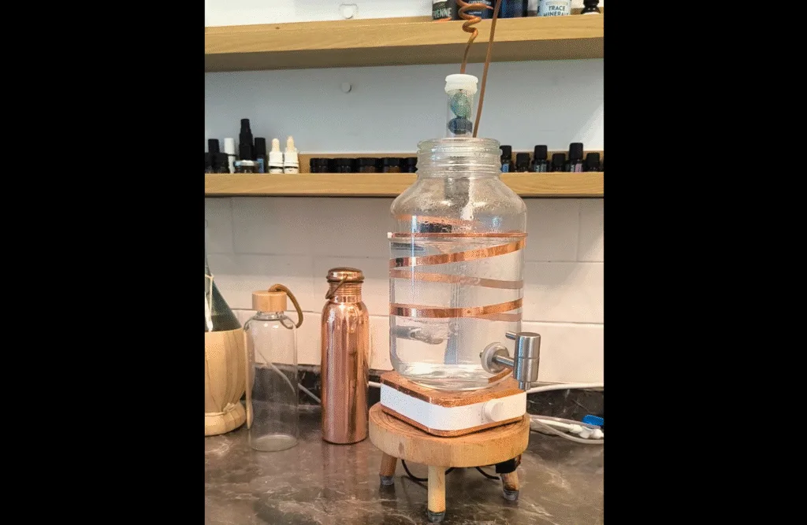

תנועת וורטקס (מערבולת לוליינית) משפיעה על איכות המים במגוון דרכים:
היא מסייעת לשחרר גזים מזיקים כמו מתאן וראדון (שעלולים להימצא במי ברז בישראל),
תורמת לספיחת חמצן מהאוויר — שכמעט ואינו קיים במי השתייה —
ולפי השערות, החמצן הזה יכול לשפר את תפקוד מערכת העיכול.
בנוסף, היא משנה את המבנה המולקולרי של המים — ויש מי שיראו בכך החזרת חיוניות.
📘 כתבתי על כך בהרחבה כאן:
🔗 https://thedigitalreality.net/why-vortexing-water/
רוצים להתנסות בזה בעצמכם? הנה שני מוצרים פשוטים ואפקטיביים:
🌀 מערבל מגנטי – משטח חשמלי מגנטי שמערבל את המים ויוצר תנועת וורטקס סיבובית
🔗 https://s.click.aliexpress.com/e/_oC1zMkO
🌀 כד מזיגה מותאם לוורטקס – נבחר בקפידה מתוך עשרות דגמים, מתאים בגובה, בצורה ובעובי
🔗 https://s.click.aliexpress.com/e/_oBGLsSG
🎥 כך זה נראה בפועל:
🧠 דגשים חשובים:
- לא כל כד מתאים — יש חשיבות אמיתית למבנה הכלי (גודל, צורה, עובי הזכוכית, וגם מבנה כללי). זה כד שהוכיח את עצמו אחרי עשרות ניסיונות.
- הקישורים הם קישורי שותפים. אם תרכשו דרך אחד מהם, אקבל עמלה קטנה (ללא שינוי במחיר עבורכם).
⚙️ ולמי שמתעניים ברעיון יותר רציני, אוטומטי ומלא,
שכולל גם סינון אופטימלי, מערכת וורטקס קבועה, והתמלאות אוטומטית של הכד –
יש אפשרות לבנות מערכת ביתית שלמה.
📦 קורס בניית מערכת ימה מלמד את כל התהליך —
מהסינון, הציוד, החיבורים, ההרכבה, ועד יצירת וורטקס שעובד 24/7 ומתמלא לבד.
🔗 https://thedigitalreality.net/courses/building-yama/
